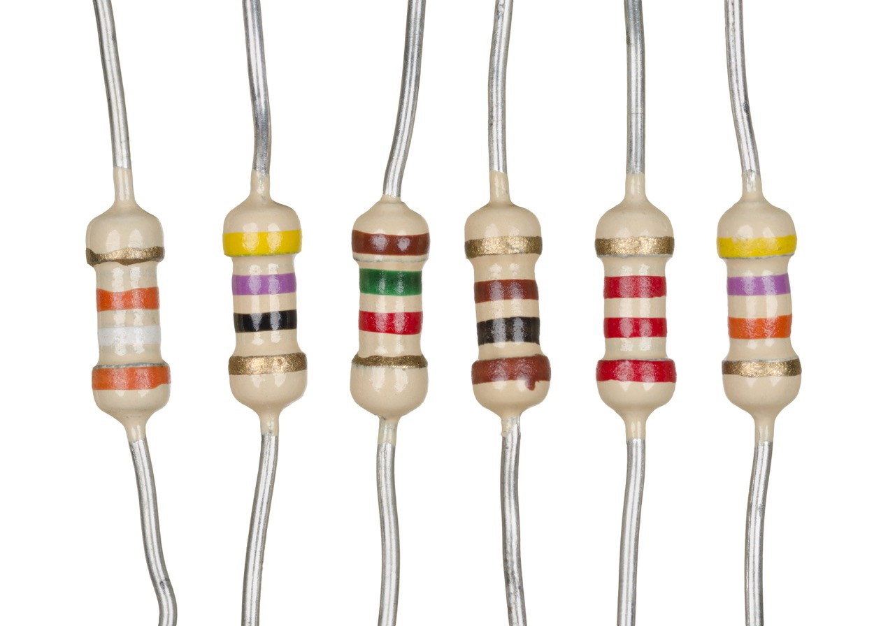
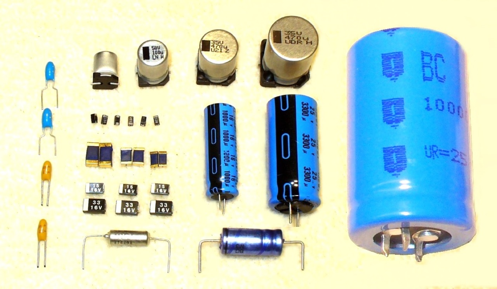
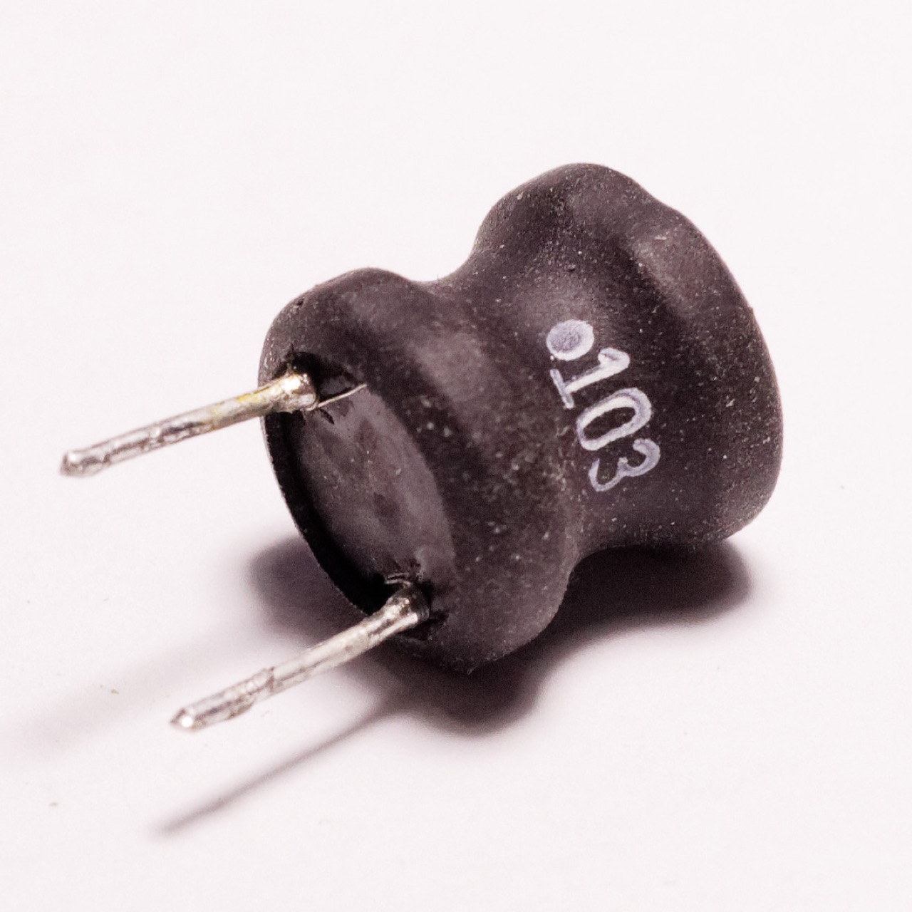
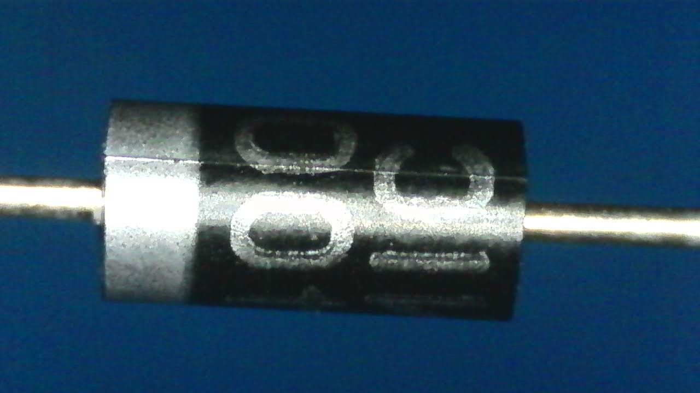
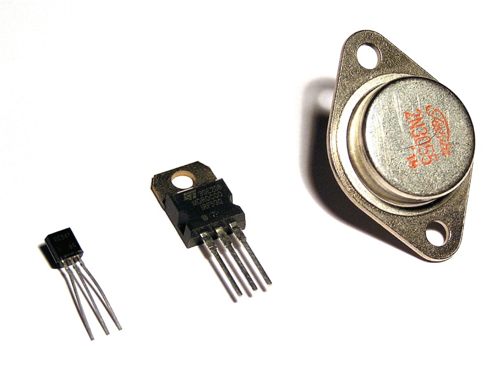
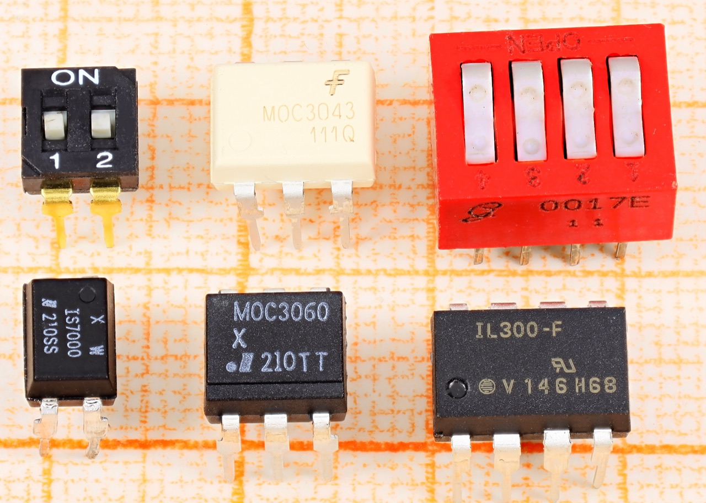

基本電子元件
電子電路是把各式各樣的電子元件,連成一個可使電流流通的迴路。設計電路前,要先認識這些基本零件。
主動元件 vs 被動元件
電子元件大致可分兩類:
・主動元件:能對訊號產生「放大」或「控制」作用,如電晶體、IC、訊號源。
・被動元件:不能放大訊號,只能消耗、儲存或調節能量,如電阻器、電容器、電感器。
電路圖是電子設計中的「圖語」,就像機械工程中的工程圖一樣,是設計與製作的溝通工具。
🔭 麵包板立體模型(可旋轉)
電子元件大多插在麵包板（breadboard）上做免焊接實驗。旋轉看看它的插孔排列與內部連接列。
💡 AI 生成的示意模型,僅供認識外形。
電子元件圖鑑
點擊卡片,認識六種最基本的電子元件。下方為這些元件的實物照片,先看看它們長什麼樣子。






用色環判讀電阻值
電阻器用「色碼」標示阻值。選擇四環或五環,再用下方選單調整每一環的顏色, 看平台即時算出電阻值。挑戰:湊出一個 4.7 kΩ 的電阻。
看四種元件「實際工作」的樣子
上方是元件的「長相」,這裡看它們的「工作」。LED 怎麼亮?電容如何充放電?二極體為什麼是「單向閥」? 電晶體如何「小電流控制大電流」?切換分頁、操作控制器,觀察電流(黃色小點)的流向。
電阻色碼怎麼讀?
電阻色碼依美國電子工業協會(EIA)標準制定。四色環:前兩環是「有效數字」、 第三環是「乘冪(10 的次方)」、第四環是「誤差」。五色環則前三環為有效數字, 多一位、更精準。例如黃(4)、紫(7)、紅(×10²)、金(±5%)= 47×10² = 4700 Ω = 4.7 kΩ ±5%。